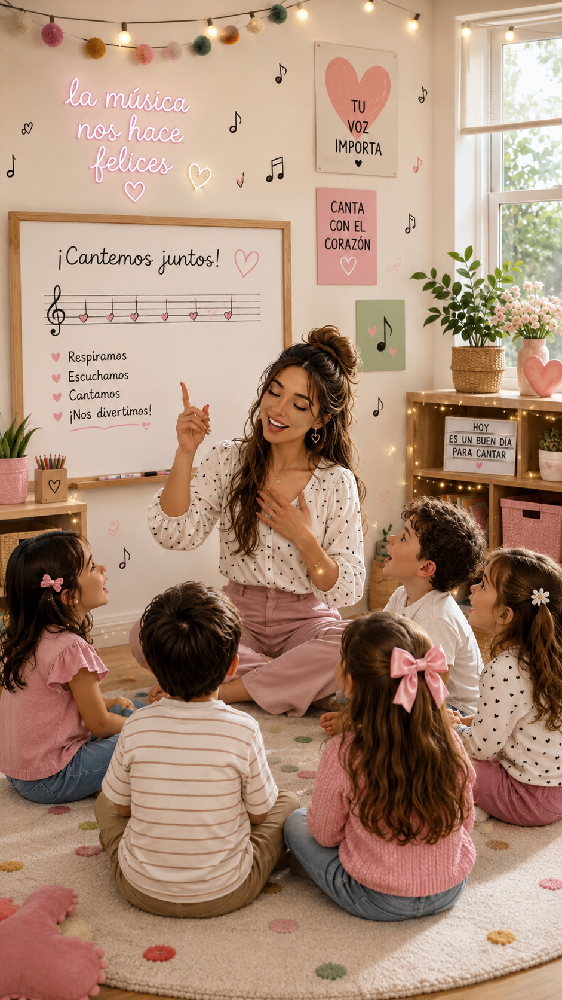
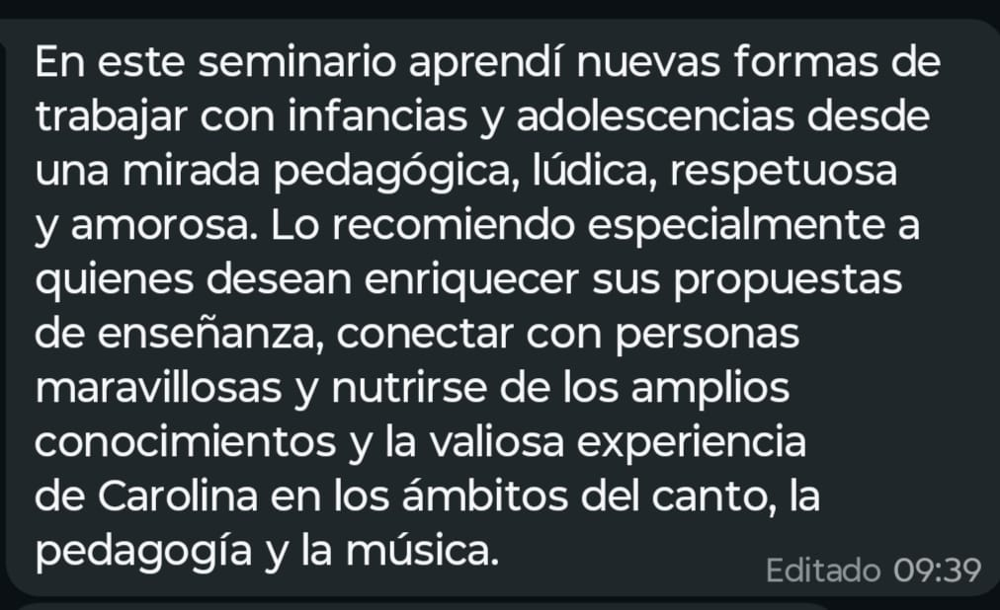
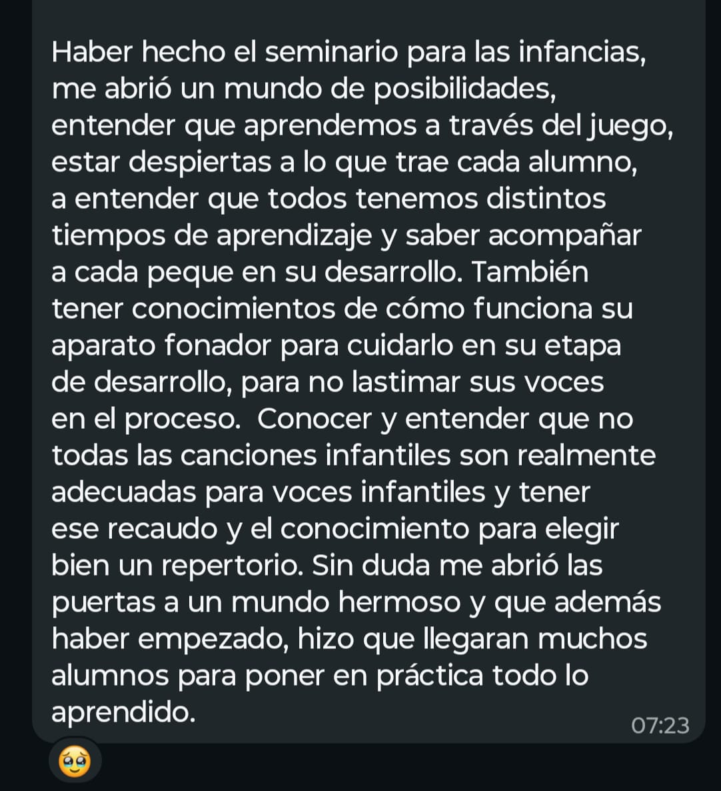
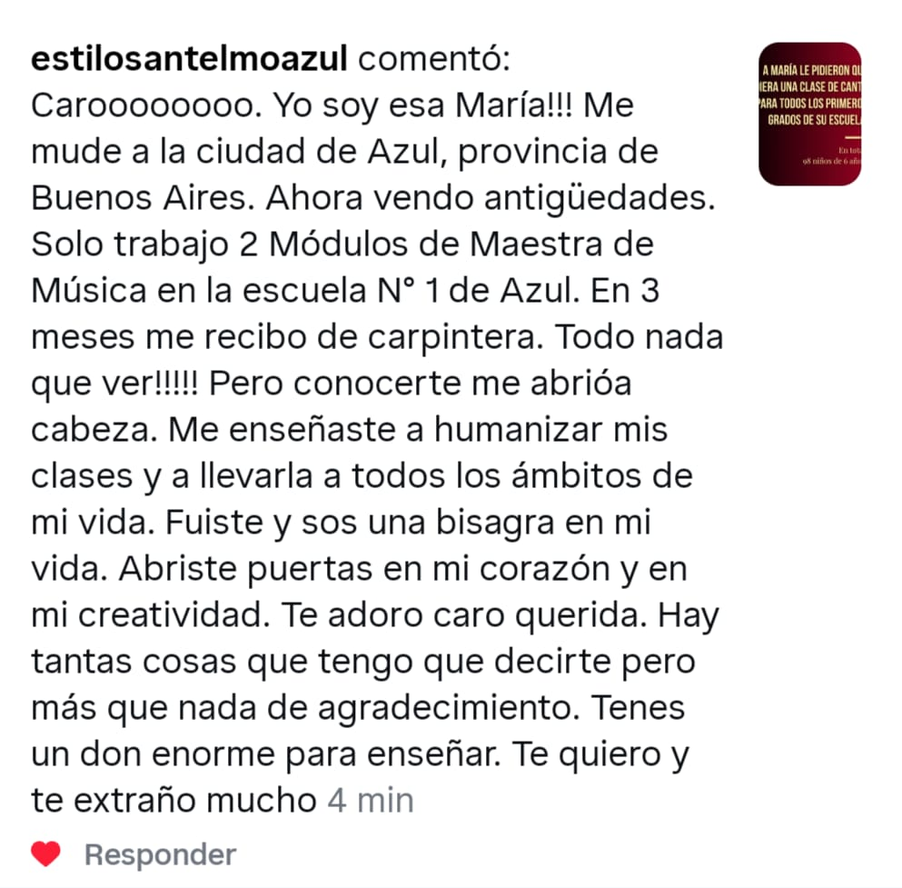
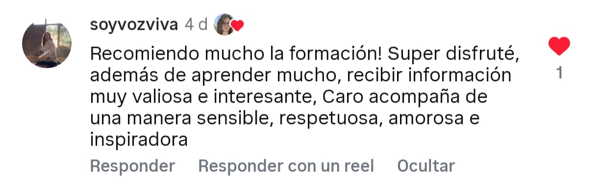
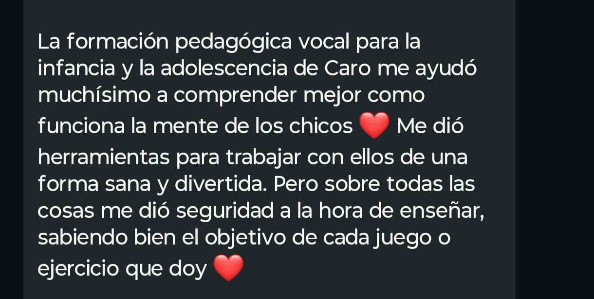
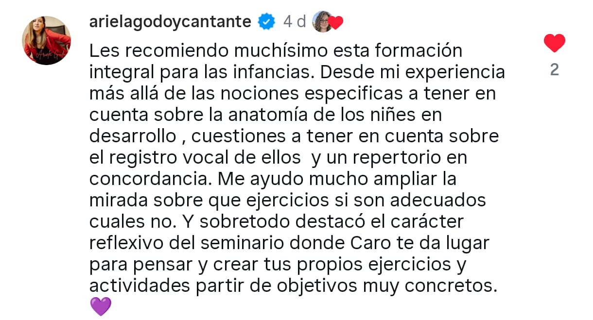
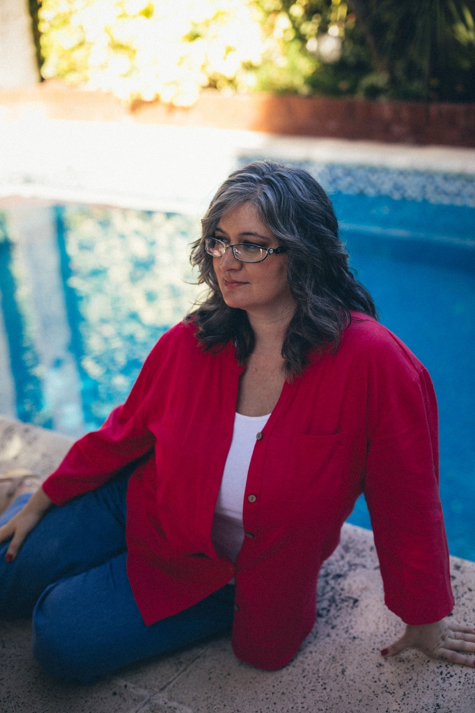

Acompañá a las próximas generaciones a vincularse con su voz desde el amor, el cuidado y la felicidad de expresarse libremente.
Inscribirme ahora
Si sentís inseguridad al enseñar a cantar a niñxs, es porque nadie te dio las herramientas para hacerlo con criterio pedagógico real — y no solo con intuición.
Decidir qué ejercicios y propuestas son mejores para cada grupo, alumnx y etapa del aprendizaje.
Crear nuevas estrategias pedagógicas que funcionan, sabiendo por qué hacés lo que hacés.
Cómo cuidar voces en crecimiento y qué cosas no se deben proponer vocalmente a unx niñx o adolescente.
Complementar tus clases con actividades para entrenar la voz desde ángulos nuevos, dinámicos y divertidos.
Una formación pensada para quien ya está dando clases y necesita sumar estructura, sin abandonar sus otros compromisos.






Opciones de pago flexibles, adaptadas a tus posibilidades.
3 cuotas mensuales. Pago disponible en ARS o en USD.
Quiero inscribirme
Autora de 5 libros sobre el canto y la voz, hace 10 años dicta esta formación en pedagogía vocal para la infancia y la adolescencia, desde una mirada que integra técnica, desarrollo humano, cuerpo, emoción y creatividad.
A lo largo de su carrera notó algo que se repetía: muchxs docentes llegaban a trabajar con infancias y adolescencias sin herramientas específicas, sosteniéndose desde la intuición o replicando modelos pensados para personas adultas — generando inseguridad docente y experiencias vocales rígidas o poco respetuosas de los procesos evolutivos. Esta formación nace para romper con eso.
No necesariamente. La formación está dirigida a docentes de canto, profesores de música, directores de coro y profesionales que trabajen o deseen trabajar con infancias y adolescencias desde la voz.
Sí. Es recomendable contar con una base de conocimientos vocales o experiencia en enseñanza musical para aprovechar mejor los contenidos.
Sí. La formación incluye espacios de consulta y una comunidad de WhatsApp para acompañar el proceso entre clases.
No. También está especialmente pensada para quienes trabajan con adolescentes, o desean comenzar a hacerlo con mayor seguridad y herramientas pedagógicas.
Sí. Todas las clases estarán disponibles en la plataforma para que puedas revisarlas cuando quieras, con acceso de por vida.
Además de las clases en vivo, recomendamos destinar entre 2 y 3 horas semanales para la lectura de materiales, la realización de actividades y la participación en los espacios de intercambio.
La entrevista forma parte del proceso de admisión y nos permite asegurar que la propuesta sea adecuada para cada participante, cuidando la experiencia de aprendizaje y el trabajo grupal.